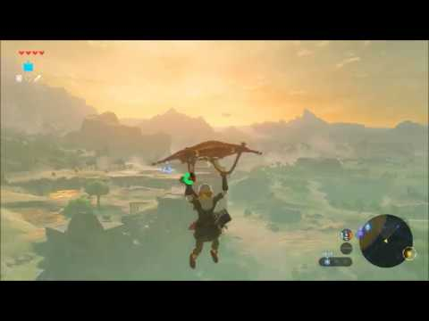
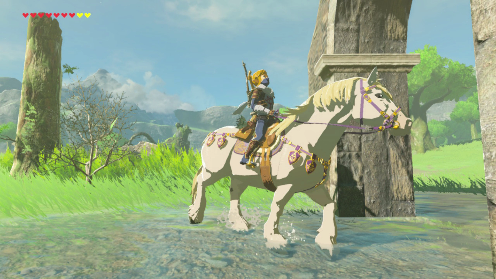
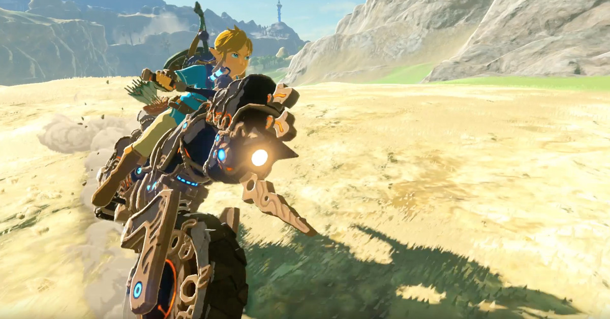

Back

Paraglider
-
You need to get this from the old man by finding your first tower.
-
You can get on high places and by clicking x glide.
-
The Parglider will take some of your STAMINA so BE CAREFUL not to go to high.

Horse
-
You have to catch the horse by being very sneaky.
-
Get the ones that are not spotted for the fastest travel.
-
Regester your horse and feed it carrots to level it up.

Motercycle
-
YOU WILL need to be very FAR INTO THE GAME to get this.
-
You have to fuel the motercycle every so often.
-
The speed of this is remarkable and it can go in rough terrain.